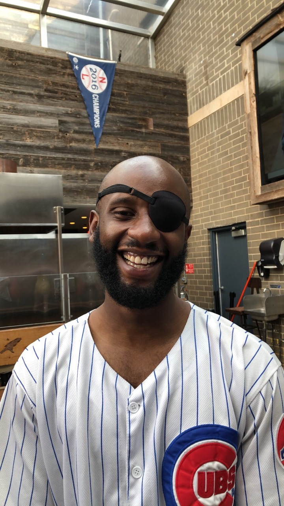

Hi! My name is Alan and I was born and raised in Illinois and have never lived outside of the state. In my childhood I really enjoyed playing sports or being involved with anything that allowed me to compete. So, yes I was the kid in math class racing to finish my time table sheet before everyone else!
I graduated from Metea Valley High School as a part of the school’s first graduating class, which allowed me and my peers to set a lot of the traditions that are still being celebrated today! I ran track during my time there and helped build the culture of the team since I was a captain. We set high expectations and held each other accountable and these practices lead to us and the teams following mine to state qualifications in various events!
After graduation, I went to NIU and obtained my degree in Pre-Physical Therapy. I realized that I didn’t really have a passion to become a Physical Therapist. So, I chose to enter the corporate world and try out sales. It suited me well because I liked the challenge of prospecting new customers, negotiation and closing deals. After I had some success doing that, I wanted to challenge myself more and that’s what led me to exploring software development, I am naturally drawn to it because it’s challenging. So, it gives me an opportunity to compete against myself because years ago I never thought that I would be able to build the simple programs I can today. With each one I complete it solidifies my confidence and propels me forward to learn to build more complex programs!